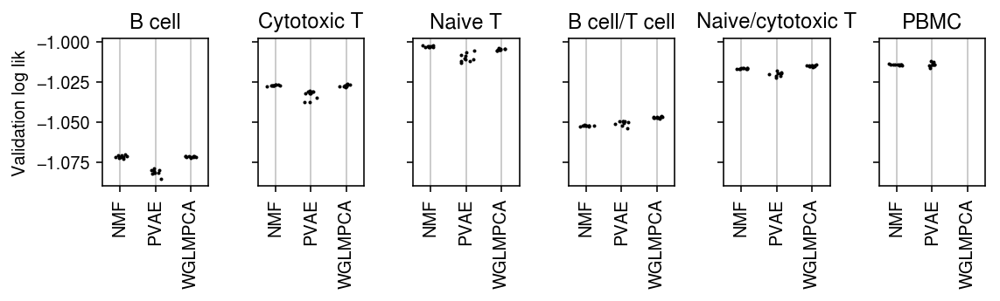

Low rank approximation
Table of Contents
Introduction
Suppose we have observations \(x_{ij} \sim \operatorname{Pois}(\lambda_{ij})\). Rather than making a distributional assumption \(\lambda_j \sim g_j(\cdot)\) (as in expression deconvolution), we might make a low rank assumption \(h(\lambda_{ij}) = [\mathbf{L F}]_{ij}\). This assumption can be interpreted as regularizing cells/genes towards each other, or as discovering clusters in the data.
A number of methods have been proposed to estimate low rank structure from count data, several specialized for scRNA-seq data.
- Non-negative matrix factorization (Lee and Seung 2001, Févotte and Idier 2011)
- Latent dirichlet allocation (Blei et al 2003, Hoffman et al. 2010, Taddy 2012)
- Hierarchical Bayesian Poisson Factorization (Gopalan et al. 2015, Levitin et al. 2019)
- ZINB-WAVE (Risso et al. 2018)
- scVI (Lopez et al. 2018)
- DCA (Eraslan et al. 2019)
- GLM-PCA (Townes et al. 2019)
There is one fundamental modelling decision which is not obvious from first principles: what precisely is low rank? In other words, what is the functional form of \(h(\cdot)\)? The methods above use either: \(h(x) = x\), \(h(x) = \ln(x)\), or learn \(h\) from the data.
Here, we evaluate methods on their ability to generalize to new data. We use real data, assuming:
\begin{align*} x_{ij} &\sim \mathrm{Poisson}(s_i \lambda_{ij})\\ h(\lambda_{ij}) &= [\mathbf{L F}]_{ij} \end{align*}and hold out molecules by randomly thinning the observed counts:
\begin{align*} y_{ij} &\sim \mathrm{Binomial}(x_{ij}, 0.5)\\ \tilde{y}_{ij} &= x_{ij} - y_{ij}\\ \end{align*}This approach leaves the relative abundance of the transcripts unchanged in expectation, implying that the low rank structure learned in \(\mathbf{Y}\) should explain the data in \(\tilde{\mathbf{Y}}\).
Our metric is then the likelihood of the held-out data. We simply need to re-scale to account for different size factors \(s_i\).
Setup
import numpy as np import pandas as pd import scmodes
import rpy2.robjects.packages import rpy2.robjects.pandas2ri import sklearn.decomposition as skd import scipy.stats as st import wlra rpy2.robjects.pandas2ri.activate() glmpca = rpy2.robjects.packages.importr('glmpca')
%matplotlib inline %config InlineBackend.figure_formats = set(['retina'])
import colorcet import matplotlib.pyplot as plt plt.rcParams['figure.facecolor'] = 'w' plt.rcParams['font.family'] = 'Nimbus Sans'
Methods
Datasets
We use real scRNA-seq datasets in heterogeneous tissues to benchmark methods:
- Mouse neuron cells sequenced on the Fluidigm C1 platform (Zeisel et al. 2015)
- Fresh PBMCs sequenced on the 10X platform (Zheng et al. 2017)
Implementation
Wrap around GLM-PCA.
def _glmpca(x, n_components, max_iters=None, eps=None): ctl = {'maxIter': 100, 'eps': 1e-4} if max_iters is not None: ctl['maxIter'] = max_iters if eps is not None: ctl['eps'] = eps ctl = rpy2.robjects.ListVector(ctl) # GLM-PCA expects [genes, samples] res = glmpca.glmpca(x.T, L=n_components, ctl=ctl) # Follow GLM-PCA code for size factors, not the paper s = np.log(x.mean(axis=1)) L = np.array(res.rx2('loadings')) F = np.array(res.rx2('factors')) etahat = s.reshape(-1, 1) + F.T.dot(L) trace = np.array(res.rx2('dev')) return etahat, trace
Results
PCA on (log) counts
Investigate whether PCA on counts or log counts gives better log likelihood. We can write principal components analysis as a generative model (Tipping 1999):
\[ \mathbf{y}_i \sim \mathcal{N}(\mathbf{y}_i; \mathbf{W z}_i, \sigma^2 \mathbf{I}) \]
Now, suppose \(y_{ij} = \ln(x_{ij} + \epsilon)\). Then, via change of variables we have:
\[ p(\mathbf{x}_i) = \frac{1}{\mathbf{x}_i + \epsilon} \mathcal{N}(\ln(\mathbf{x}_i + \epsilon); \mathbf{W z}_i, \sigma^2 \mathbf{I}) \]
where we abuse notation for element-wise operations. In general, this means we can compare the likelihood of the observed data under models of different transformations of the observations.
<<imports>> import scipy.stats as st import sklearn.decomposition as skd ipsc = scmodes.dataset.ipsc('/project2/mstephens/aksarkar/projects/singlecell-qtl/data/') res0 = skd.PCA(n_components=10).fit(ipsc) z_0 = res0.transform(ipsc) llik0 = st.norm(loc=z_0.dot(res0.components_), scale=np.sqrt(res0.noise_variance_)).logpdf(ipsc).sum() log_ipsc = np.log(ipsc + 1) res1 = skd.PCA(n_components=10).fit(log_ipsc) z_1 = res1.transform(ipsc) llik1 = (-log_ipsc + st.norm(loc=z_1.dot(res1.components_), scale=np.sqrt(res1.noise_variance_)).logpdf(log_ipsc)).sum() print(f'PCA of untransformed counts: {llik0:.4g}') print(f'PCA of log1p counts: {llik1:.4g}')
sbatch --partition=mstephens --mem=8G #!/bin/bash source activate scmodes python <<EOF <<pca>> EOF
PCA of untransformed counts: -4.712e+08 PCA of log1p counts: -3.57e+09
Sorted cells benchmark
<<imports>> import os methods = ['nmf', 'glmpca', 'pvae'] datasets = ['b_cells', 'cytotoxic_t', 'naive_t'] m = methods[int(os.environ['SLURM_ARRAY_TASK_ID'])] for d in datasets: data = scmodes.dataset.read_10x(f'/project2/mstephens/aksarkar/projects/singlecell-ideas/data/10xgenomics/{d}/filtered_matrices_mex/hg19/', return_df=True) res = scmodes.benchmark.evaluate_lra_generalization(data, methods=[m], n_trials=10) res.to_csv(f'/scratch/midway2/aksarkar/modes/lra-generalization/{d}-{m}.txt.gz')
sbatch --partition=gpu2 --gres=gpu:1 -a 2 --time=2:00:00 --job-name=lra-benchmark #!/bin/bash source activate scmodes python /project2/mstephens/aksarkar/projects/singlecell-modes/code/zheng-bench-lra.py
Synthetic mixtures benchmark
<<imports>> import os methods = ['pvae'] datasets = [('cytotoxic_t', 'b_cells'), ('cytotoxic_t', 'naive_t')] d1, d2 = datasets[int(os.environ['SLURM_ARRAY_TASK_ID'])] x1 = scmodes.dataset.read_10x(f'/project2/mstephens/aksarkar/projects/singlecell-ideas/data/10xgenomics/{d1}/filtered_matrices_mex/hg19/', return_df=True, min_detect=0) x2 = scmodes.dataset.read_10x(f'/project2/mstephens/aksarkar/projects/singlecell-ideas/data/10xgenomics/{d2}/filtered_matrices_mex/hg19/', return_df=True, min_detect=0) x, y = scmodes.dataset.synthetic_mix(x1, x2, min_detect=.25) res = scmodes.benchmark.evaluate_lra_generalization(x, methods=methods, n_trials=10) res.to_csv(f'/scratch/midway2/aksarkar/modes/lra-generalization/{d1}-{d2}-pvae.txt.gz')
sbatch --partition=gpu2 --gres=gpu:1 -a 0-1 --mem=16G --time=6:00:00 --job-name=lra-benchmark #!/bin/bash source activate scmodes python /project2/mstephens/aksarkar/projects/singlecell-modes/code/synthetic-mix-lra.py
PBMCs benchmark
<<imports>> import os tasks = ['nmf', 'glmpca', 'pvae'] task = tasks[int(os.environ['SLURM_ARRAY_TASK_ID'])] data = scmodes.dataset.read_10x('/project2/mstephens/aksarkar/projects/singlecell-ideas/data/10xgenomics/fresh_68k_pbmc_donor_a/filtered_matrices_mex/hg19/', return_df=True) res = scmodes.benchmark.evaluate_lra_generalization(data, methods=[task], n_trials=10) res.to_csv(f'/scratch/midway2/aksarkar/modes/lra-generalization/pbmcs-{task}.txt.gz')
sbatch --partition=broadwl -a 1 -n1 -c28 --exclusive --time=6:00:00 --job-name=lra-benchmark #!/bin/bash source activate scmodes python /project2/mstephens/aksarkar/projects/singlecell-modes/code/pbmc-bench-lra.py
Run PVAE on GPU.
sbatch --partition=gpu2 --gres=gpu:1 -a 2 --mem=16G --time=6:00:00 --job-name=lra-benchmark #!/bin/bash source activate scmodes python /project2/mstephens/aksarkar/projects/singlecell-modes/code/pbmc-bench-lra.py
Plot the results
Move the results to permanent storage.
rsync -au /scratch/midway2/aksarkar/modes/lra-generalization/ /project2/mstephens/aksarkar/projects/singlecell-modes/data/lra-generalization/
Read the results.
methods = ['nmf', 'glmpca', 'pvae'] data = ['b_cells', 'cytotoxic_t', 'naive_t', 'cytotoxic_t-b_cells', 'cytotoxic_t-naive_t', 'pbmcs'] titles = ['B cell', 'Cytotoxic T', 'Naive T', 'B cell/T cell', 'Naive/cytotoxic T', 'PBMC'] results = {k: pd.concat([pd.read_csv(f'/project2/mstephens/aksarkar/projects/singlecell-modes/data/lra-generalization/{k}-{m}.txt.gz', header=[0, 1], index_col=0) for m in methods], axis='columns') for k in data}
plt.clf() fig, ax = plt.subplots(1, len(results), sharey=True) fig.set_size_inches(8, 2) for a, k, t in zip(ax, results, titles): llik = results[k]['validation'] for x, m in enumerate(llik): a.scatter(x + np.random.normal(scale=0.1, size=llik.shape[0]), llik[m].values, s=1, c='k', zorder=3) a.grid(c='0.8', lw=1, axis='x') a.set_xlim(-0.5, 2.5) a.set_xticks(np.arange(3)) a.set_xticklabels([m.upper() for m in methods], rotation=90) a.set_title(t) ax[0].set_ylabel('Validation log lik') fig.tight_layout()
